Sample code for log-likelihood calibration
Jean-Michel Perraud 2020-01-28
Sample code for log-likelihood calibration
About this document
This document was generated from an R markdown file on 2020-01-28 10:54:01. It illustrates how to set up a calibration with a log-likelihood objective.
Setting up a calibration on daily data
We will use some sample data from (MMH - Minamata?) included in the package
library(lubridate)
library(swift)data(swift_sample_data)
sSpan <- '1990-01-01/2005-12-31'
rain <- sampleSeries('MMH', 'rain')[sSpan]
evap <- sampleSeries('MMH', 'evap')[sSpan]
flow <- sampleSeries('MMH', 'flow')[sSpan]We need to adjust the observed flow, as the SWIFTv1 legacy missing value code is not consistent with default handling in SAK.
flow[flow<0] <- NALet’s create a single catchment setup, using daily data. We need so specify the simulation time step to be consistent with the daily input data.
ms <- createSubarea('GR4J', 1.0)
s <- start(rain)
e <- end(rain)
setSimulationSpan(ms, s, e)
setSimulationTimeStep(ms, 'daily')Assign input time series
subAreaName <- getSubareaNames(ms)[1]
playSubareaInput(ms, input=rain, subAreaName, "P")
playSubareaInput(ms, input=evap, subAreaName, "E")Model variables identifiers are hierarchical, with separators ‘.’ and ‘|’ supported. The “dot” notation should now be preferred, as some R functions producing data frames may change the variable names and replace some characters with ‘.’.
subareaId <- paste0("subarea.", subAreaName)
rootId <- paste0(subareaId, ".")
print(getVariableIds(ms, subareaId))## [1] "areaKm2" "P" "E" "runoff"
## [5] "S" "R" "Ps" "Es"
## [9] "Pr" "ech1" "ech2" "Perc"
## [13] "x1" "x2" "x3" "x4"
## [17] "UHExponent" "PercFactor" "OutflowVolume" "OutflowRate"gr4StateNames <- paste0(rootId, c('runoff', 'S', 'R', 'Perc'))
for (name in gr4StateNames) { recordState(ms, name) }Let’s check that one simulation runs fine, before we build a calibration definition.
execSimulation(ms)
sState <- getRecorded(ms, gr4StateNames[2])
names(sState) <- shortVarId(names(sState))
zoo::plot.zoo(sState)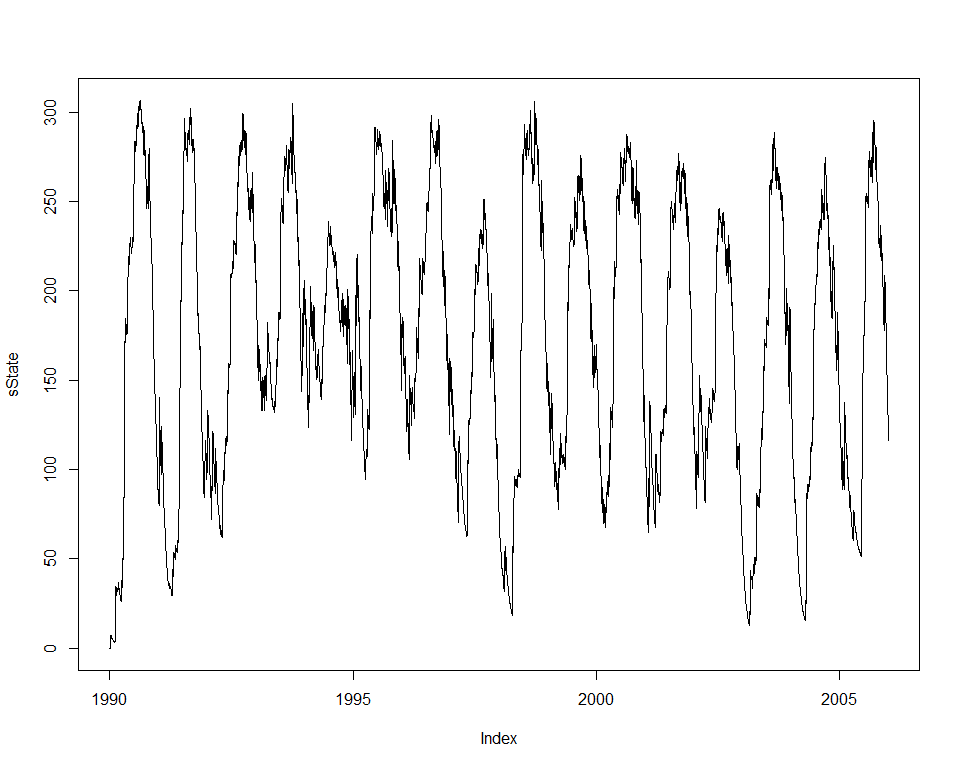
Let’s build the objective calculator that will guide the calibration process:
w <- uchronia::mkDate(1992, 01, 01)
runoffDepthVarname <- gr4StateNames[1]
modRunoff <- getRecorded(ms, runoffDepthVarname)
zoo::index(flow) <- zoo::index(modRunoff)
objective <- createObjective(ms, runoffDepthVarname, flow, 'log-likelihood', w, e)Define the feasible parameter space, using a generic parameter set for the model parameters. This is ‘wrapped’ by a log-likelihood parameter set with the extra parameters used in the log likelihood calculation, but which exposes all the parameters as 8 independent degrees of freedom to the optimizer.
(pSpecGr4j <- joki::getFreeParams('GR4J'))## Name Value Min Max
## 1 x1 650.488000 1 3000
## 2 x2 -0.280648 -27 27
## 3 x3 7.891230 1 660
## 4 x4 18.917200 1 240pSpecGr4j$Value <- c(542.1981111, -0.4127542, 7.7403390, 1.2388548)
pSpecGr4j$Min <- c(1,-30, 1,1)
pSpecGr4j$Max <- c(3000, 30, 1000, 240)
pSpecGr4j$Name <- paste0(rootId, pSpecGr4j$Name)
maxobs <- max(flow, na.rm=TRUE)
p <- createParameterizer(type='Generic', specs=pSpecGr4j)
setLogLikParamKeys(a='a', b='b', m='m', s='s', ct="ct", censopt='censopt')
censorThreshold <- maxobs / 100 # TBC
censopt <- 0.0
loglik <- createParameterizer(type='no apply')
addToHyperCube(loglik,
data.frame( Name=c('b','m','s','a','maxobs','ct', 'censopt'),
Min = c(-30, 0, 1, -30, maxobs, censorThreshold, censopt),
Max = c(0, 0, 1000, 1, maxobs, censorThreshold, censopt),
Value = c(-7, 0, 100, -10, maxobs, censorThreshold, censopt),
stringsAsFactors=FALSE) )
p <- concatenateParameterizers(p, loglik)
parameterizerAsDataFrame(p)## Name Min Max Value
## 1 subarea.Subarea.x1 1.0000000 3000.0000000 542.1981111
## 2 subarea.Subarea.x2 -30.0000000 30.0000000 -0.4127542
## 3 subarea.Subarea.x3 1.0000000 1000.0000000 7.7403390
## 4 subarea.Subarea.x4 1.0000000 240.0000000 1.2388548
## 5 b -30.0000000 0.0000000 -7.0000000
## 6 m 0.0000000 0.0000000 0.0000000
## 7 s 1.0000000 1000.0000000 100.0000000
## 8 a -30.0000000 1.0000000 -10.0000000
## 9 maxobs 17.2211304 17.2211304 17.2211304
## 10 ct 0.1722113 0.1722113 0.1722113
## 11 censopt 0.0000000 0.0000000 0.0000000Check that the objective calculator works, at least with the default values in the feasible parameter space:
score <- getScore(objective, p)
print(score)## $scores
## Log-likelihood
## -463759.9
##
## $sysconfig
## Name Min Max Value
## 1 subarea.Subarea.x1 1.0000000 3000.0000000 542.1981111
## 2 subarea.Subarea.x2 -30.0000000 30.0000000 -0.4127542
## 3 subarea.Subarea.x3 1.0000000 1000.0000000 7.7403390
## 4 subarea.Subarea.x4 1.0000000 240.0000000 1.2388548
## 5 b -30.0000000 0.0000000 -7.0000000
## 6 m 0.0000000 0.0000000 0.0000000
## 7 s 1.0000000 1000.0000000 100.0000000
## 8 a -30.0000000 1.0000000 -10.0000000
## 9 maxobs 17.2211304 17.2211304 17.2211304
## 10 ct 0.1722113 0.1722113 0.1722113
## 11 censopt 0.0000000 0.0000000 0.0000000modRunoff <- getRecorded(ms, runoffDepthVarname)
joki::plotTwoSeries(flow, modRunoff, ylab="obs/mod runoff", startTime = start(flow), endTime = end(flow))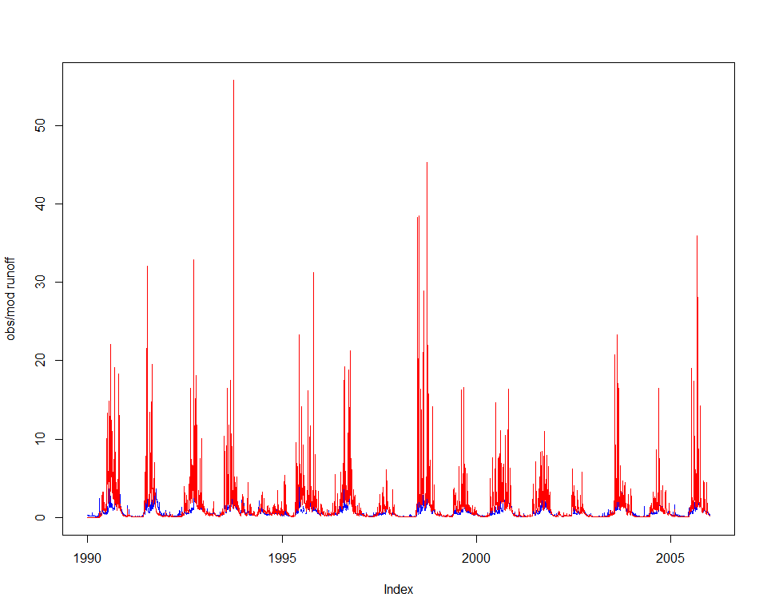
Build the optimiser definition, instrument with a logger.
# term <- getMaxRuntimeTermination(maxHours = 0.3/60) # ~20 second appears enough with SWIFT binaries in Release mode
# term <- getMarginalTermination(tolerance = 1e-06, cutoffNoImprovement = 10, maxHours = 0.3/60)
term <- swift::CreateSceTerminationWila_Pkg_R('relative standard deviation', c('0.05','0.0167'))
sceParams <- getDefaultSceParameters()
urs <- createParameterSampler(0, p, 'urs')
optimizer <- createSceOptimSwift(objective, term, SCEpars=sceParams, urs)
calibLogger <- setCalibrationLogger(optimizer, '')startTime <- lubridate::now()
calibResults <- executeOptimization(optimizer)
endTime <- lubridate::now()
calibWallTime <- endTime-startTime
print(paste( 'Optimization completed in ', calibWallTime, attr(calibWallTime, 'units')))## [1] "Optimization completed in 50.4119968414307 secs"d <- getLoggerContent(optimizer)
d$PointNumber = 1:nrow(d)
logMh <- mhplot::mkOptimLog(d, fitness = 'Log.likelihood', messages = "Message", categories = "Category")
geomOps <- mhplot::subsetByMessage(logMh)
str(geomOps@data)## 'data.frame': 2575 obs. of 16 variables:
## $ Category : Factor w/ 7 levels "Complex No 0",..: 7 7 7 7 7 7 7 7 7 7 ...
## $ CurrentShuffle : Factor w/ 37 levels "","0","1","10",..: 1 1 1 1 1 1 1 1 1 1 ...
## $ Message : Factor w/ 6 levels "Adding a random point in hypercube",..: 4 4 4 4 4 4 4 4 4 4 ...
## $ Log.likelihood : num -1.00e+20 -1.00e+20 -1.00e+20 -7.71e+05 -1.00e+20 ...
## $ a : num -17.63 -26.11 -3.56 -28.56 -14.85 ...
## $ b : num -24.79 -4.05 -5.19 -4.51 -7.93 ...
## $ censopt : num 0 0 0 0 0 0 0 0 0 0 ...
## $ ct : num 0.172 0.172 0.172 0.172 0.172 ...
## $ m : num 0 0 0 0 0 0 0 0 0 0 ...
## $ maxobs : num 17.2 17.2 17.2 17.2 17.2 ...
## $ s : num 710 977 784 196 354 ...
## $ subarea.Subarea.x1: num 2843 227 1651 2993 224 ...
## $ subarea.Subarea.x2: num 23 13.5 -13.6 26.2 -26.1 ...
## $ subarea.Subarea.x3: num 62.2 611.4 425.9 246.5 658.5 ...
## $ subarea.Subarea.x4: num 161.9 223.4 120 190.2 65.7 ...
## $ PointNumber : int 1 2 3 4 5 6 7 8 9 10 ...pVarIds <- (parameterizerAsDataFrame(p))$Name
for (pVar in pVarIds) {
print(mhplot::plotParamEvolution(geomOps, pVar))
}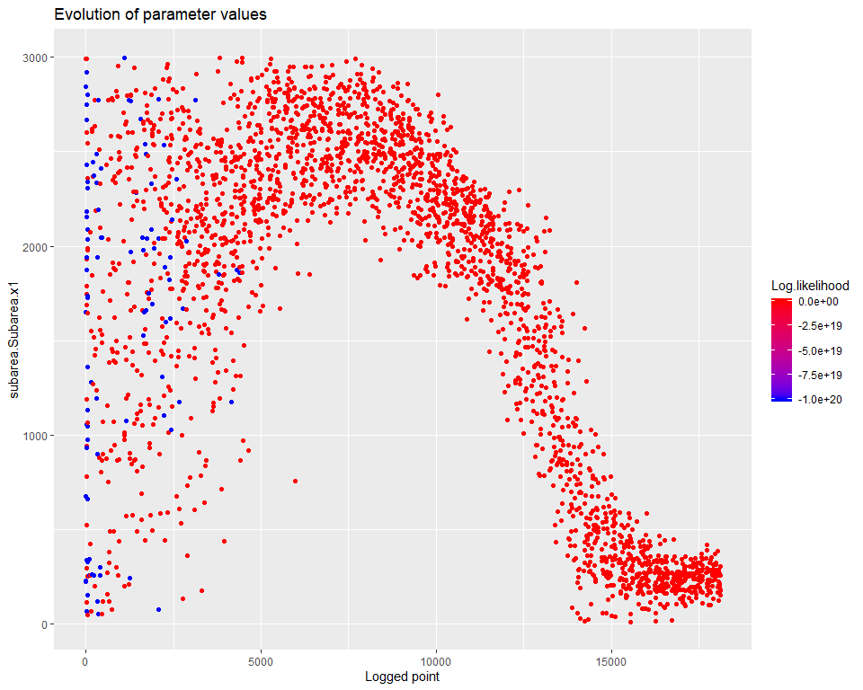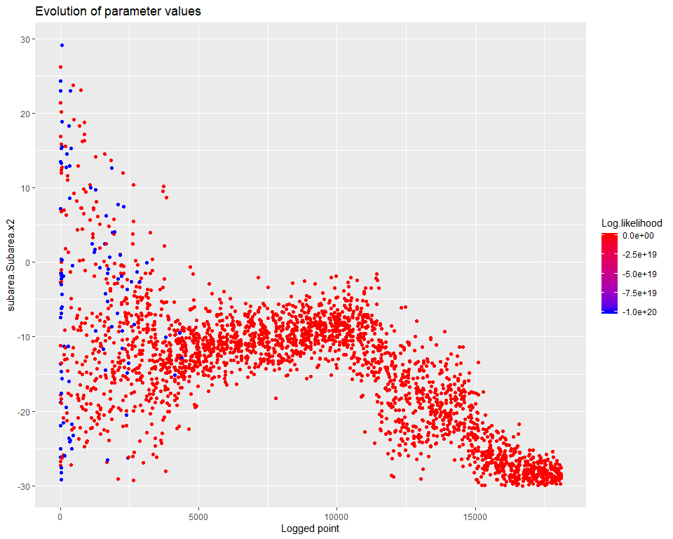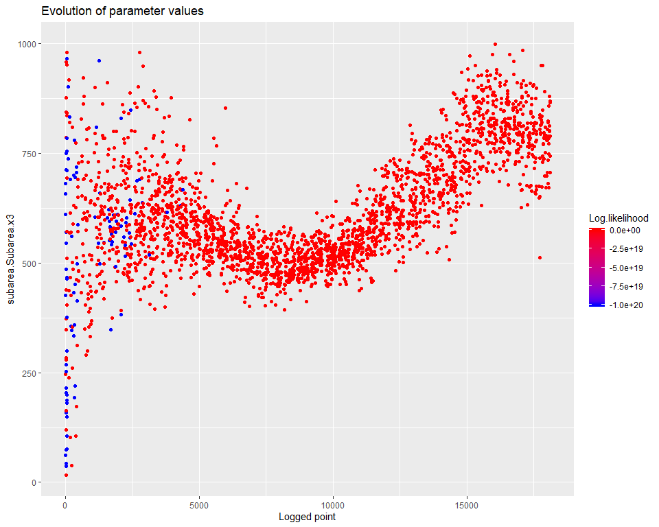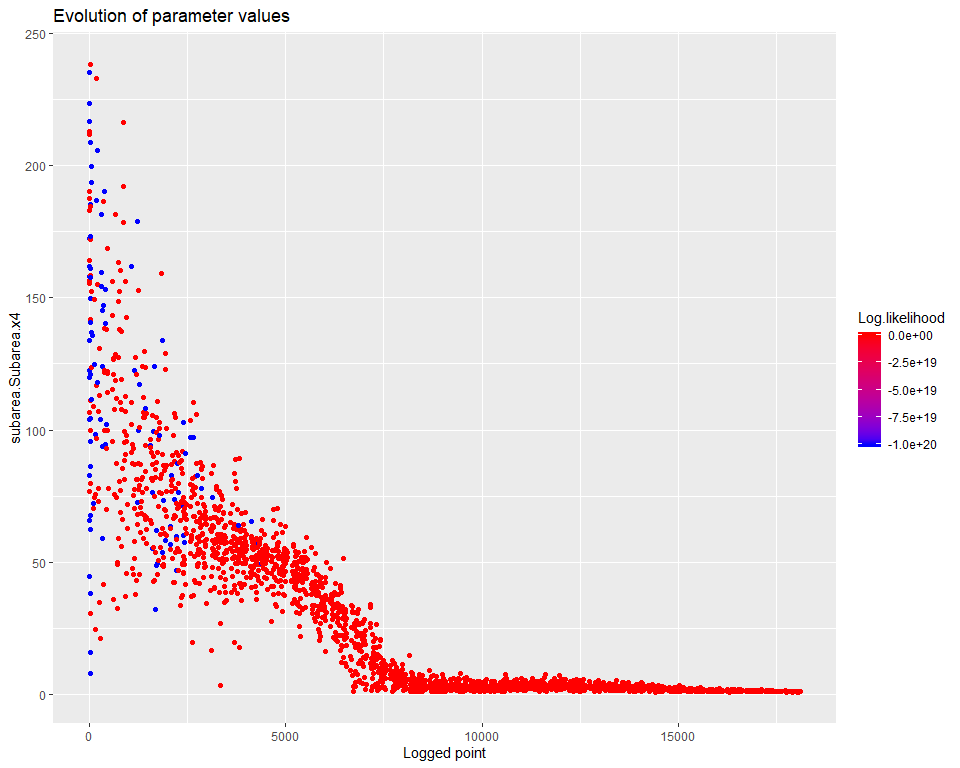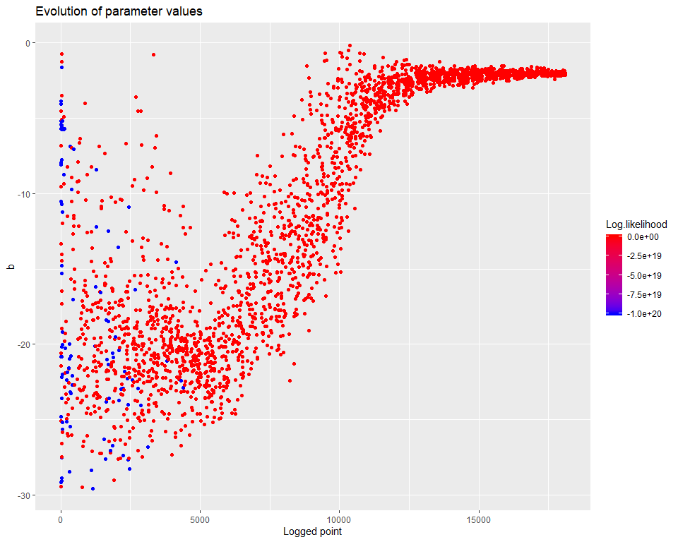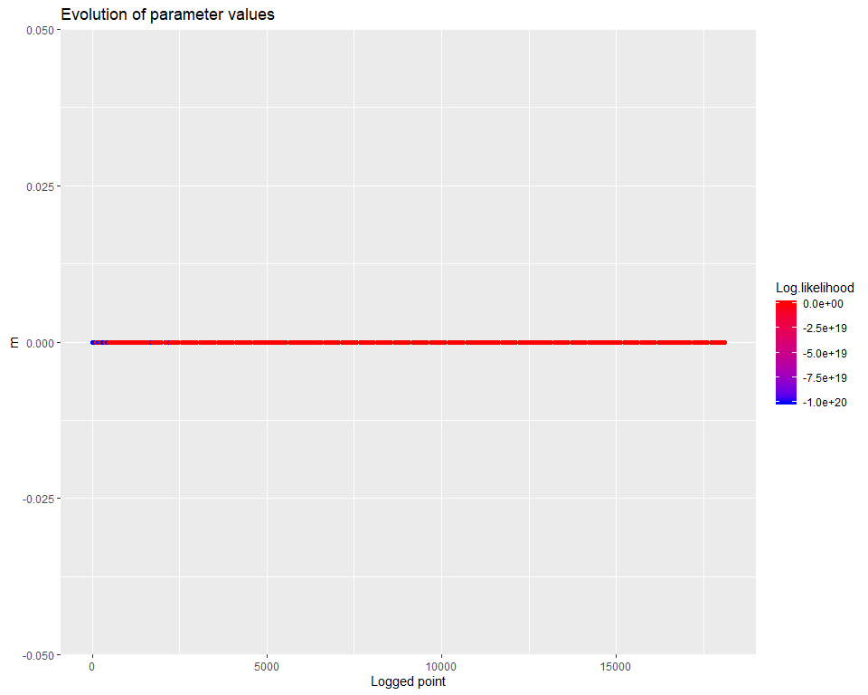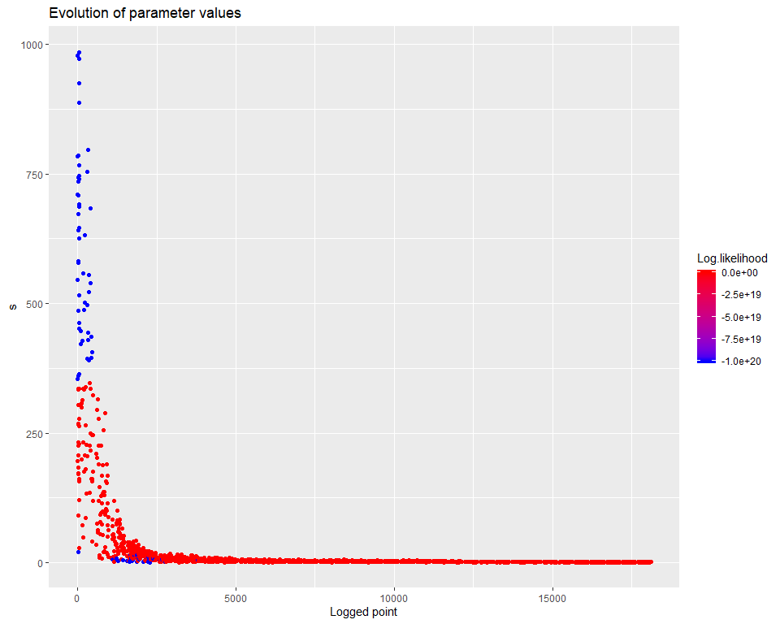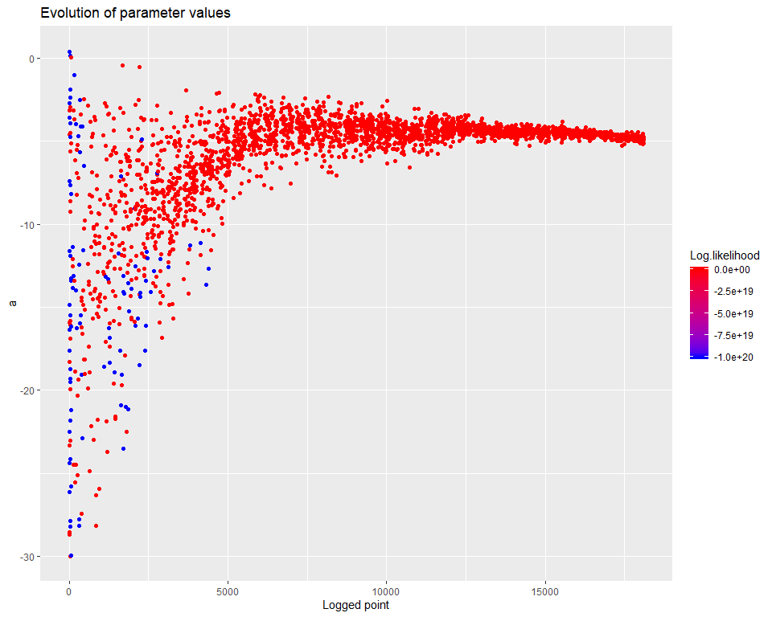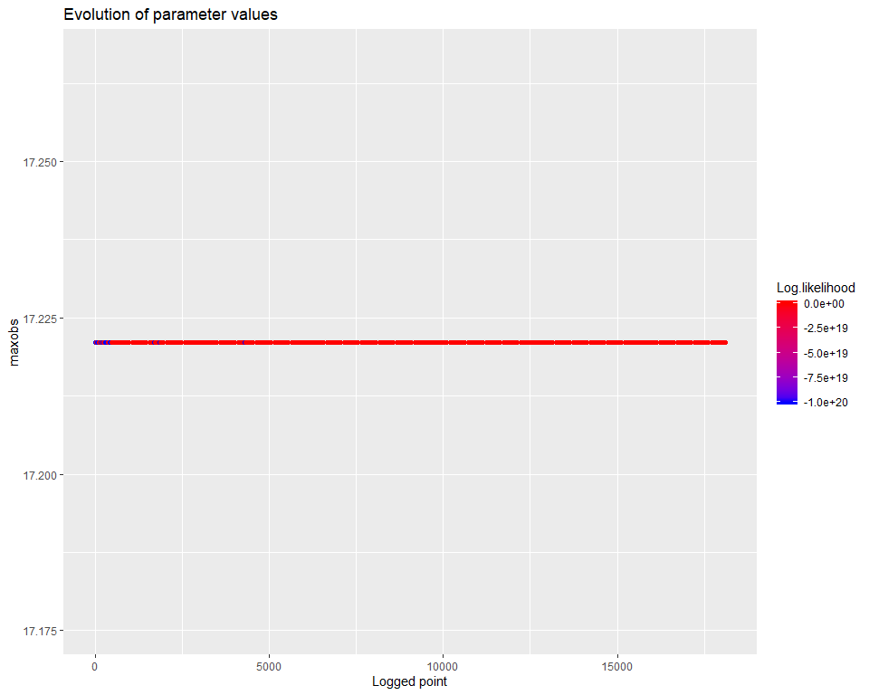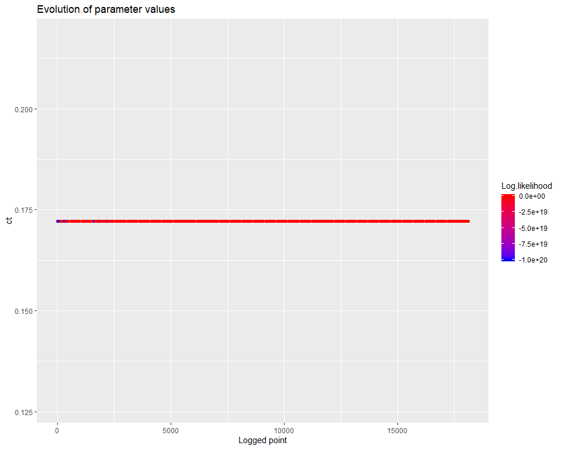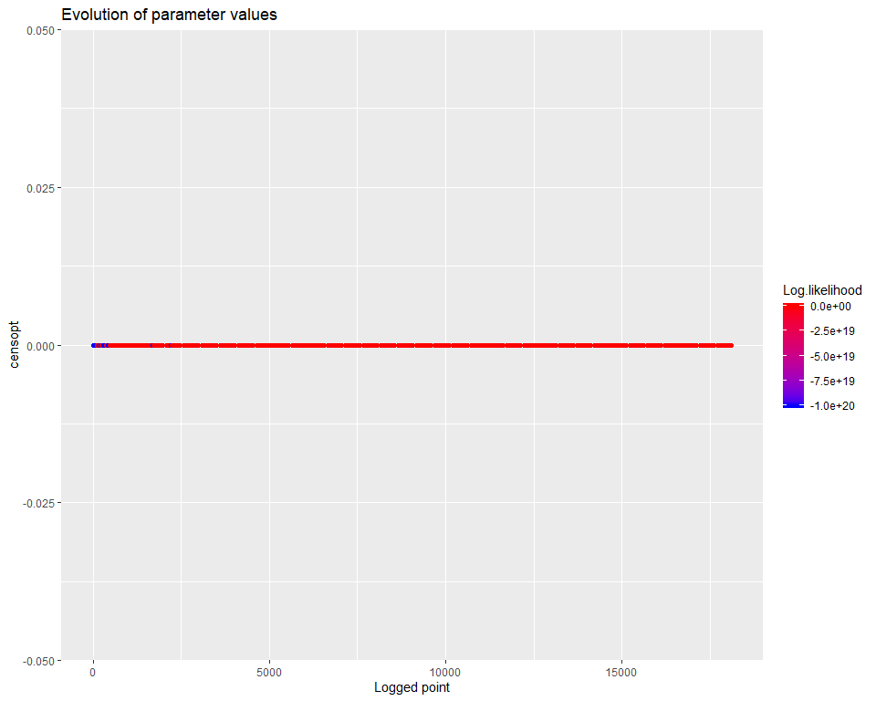
Finally, get a visual of the runoff time series with the best known parameter set (the penultimate entry in the data frame with the log of the calibration process).
sortedResults <- sortByScore(calibResults, 'Log-likelihood')
head(scoresAsDataFrame(sortedResults))## Log.likelihood subarea.Subarea.x1 subarea.Subarea.x2 subarea.Subarea.x3
## 1 2924.671 266.1925 -29.60785 773.6771
## 2 2923.107 191.3387 -29.28017 824.4254
## 3 2920.818 176.7221 -27.53492 866.5888
## 4 2911.518 177.2337 -28.48846 789.2143
## 5 2911.046 280.0083 -28.70505 771.3981
## 6 2902.444 231.8093 -26.57367 809.7063
## subarea.Subarea.x4 b m s a maxobs ct
## 1 1.033368 -1.850320 0 1.099840 -4.939078 17.22113 0.1722113
## 2 1.147338 -2.099422 0 1.242173 -5.096023 17.22113 0.1722113
## 3 1.032679 -2.056026 0 1.189237 -5.143367 17.22113 0.1722113
## 4 1.165675 -2.045539 0 1.146694 -4.928836 17.22113 0.1722113
## 5 1.082458 -2.118719 0 1.143031 -4.991464 17.22113 0.1722113
## 6 1.035202 -2.024382 0 1.165068 -5.007636 17.22113 0.1722113
## censopt
## 1 0
## 2 0
## 3 0
## 4 0
## 5 0
## 6 0bestPset <- getScoreAtIndex(sortedResults, 1)
applySysConfig(bestPset, ms)
execSimulation(ms)
modRunoff <- getRecorded(ms, runoffDepthVarname)
joki::plotTwoSeries(flow, modRunoff, ylab="obs/mod runoff", startTime = start(flow), endTime = end(flow))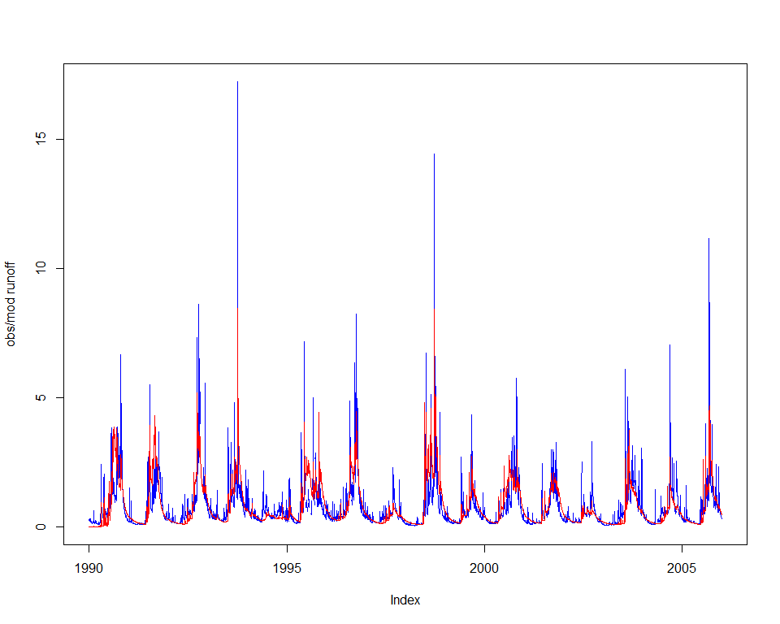